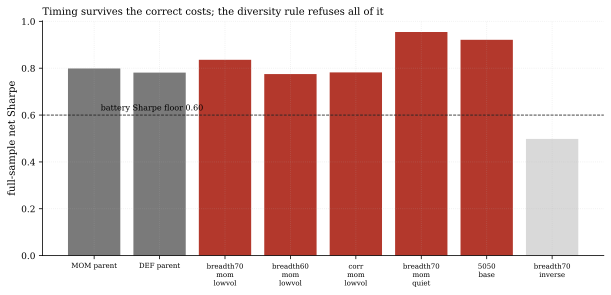
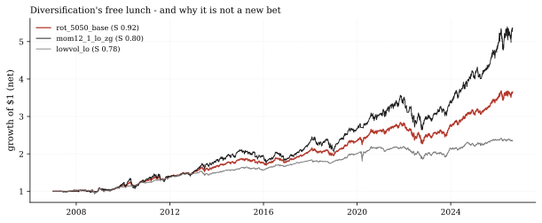
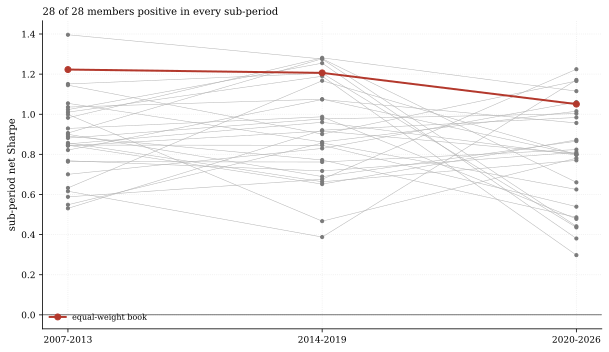

The one-paragraph version. The operator asked this cycle to run research until something was worth publishing; the something has two parts. First, the process catch: our first execution of the pre-registered wing-rotation family charged switching costs at 35 bps - 10 times the preregistered 3.5 bps - and that error manufactured a clean false conclusion ("timing destroys value"); the editor's review caught it and everything below is the corrected run. Second, the finding: at the correct cost, five of six rotation cells pass every performance metric (best Sharpe 0.95, Sortino 1.35) - wing timing is cost-robust, roughly a wash against its parents (0.80/0.78) with the quiet-wing variant ahead - but every passer correlates 0.77-0.94 with an existing member, so the diversity rule admits none: rotation between members is the same trade in a different sequencer. Zero new members, for the right reason.
How we worked this problem
The surface-exhaustion ledger (2026-08-23) marks daily equity data marginal but admits new pre-registered families. No grave in the registry rotates between certified member streams - the rotation-named graves (dispersion-gated, credit-firesale, VIX-term-structure, ftq, ETF-interaction) are signal-family rotations on raw assets - and wave 3 searched sector rotation of raw ETFs, a different construction; so we froze six cells in docs/wave4-wing-rotation-prereg.md before running anything: two breadth thresholds (70% and 60%), the 60-day stock-bond-correlation sign, a defensive-wing swap, a static 50/50 control, and a contrarian control. The book holds one wing per day, state known the prior session; switches cost 3.5 bps per leg (the T1 one-way schedule). The first run's SWITCH_COST constant was 0.0035 - 35 bps, a decimal error against the frozen spec - and the corrected run charges 0.00035; both runs are disclosed in the pre-registration amendment. Every cell faces the unchanged six-metric battery and the corr-below-0.75 rule against all 32 existing member streams (the library grew to 28 equity members through parallel hunt lanes mid-cycle - a superset of the pre-registration's guard, stricter not looser). The same run produced a stability audit: sub-period Sharpes (2007-2013, 2014-2019, 2020-2026) for every member, no selection.
The data audit
| Source | Coverage | As-of | Role |
|---|---|---|---|
data/loop/library/*_T1.csv + top_tier + crypto wave streams | 28 equity members (wings, parents, stability) + 32-stream corr guard | 2026-08-24 (equity) / 08-18 (crypto) / 08-14 (top-tier) | every library input |
data/loop/library_scratch/wave4_rotation/*_T1.csv | 6 rotation net streams (corrected 3.5 bps switch cost) | 2026-08-24 | the wave-4 cells (metrics recomputed in this note) |
data/cache_panel_2007_2026.parquet | 16 ETFs, daily closes | 2026-08-25 | breadth / correlation states (definition only) |
The pre-registration froze on the 2026-08-14 library and the first, cost-broken run predates the mid-cycle library refresh - but the corrected run that produced every number below executed after it, on the single 2026-08-24 equity stream cut for wings, parents, guard and stability alike. The funding cache (as-of 2026-07-31) is not used.
The external read
The corrected result lands on familiar ground: Blanchett (2011) found tactical asset allocation unlikely to beat a static mix once costs are counted (FPA Journal); the practitioner debate continues (Commonfund). Our cross-check sharpens it from the other side: at our preregistered costs the timing variants are NOT destroyed - 198 switches at 3.5 bps per leg cost about 13.9% of notional across nineteen years and the best rotation still earns Sharpe 0.95 against the static blend's 0.92. The reason we still refuse them is not cost but redundancy - a distinction our first, cost-broken run would have blurred completely.
Exhibits
Exhibit 1 - the wave in one picture. Parent Sharpes 0.80 (momentum) and 0.78 (low-vol); the four directional rotations print 0.78-0.95, the static blend 0.92, and the contrarian control 0.50 (the only battery failure - both wings are positive streams, so even inverting the state mixes them at a profit, just a worse one). Five of six clear the full battery.

Exhibit 2 - strong, and still the same trade. The quiet-wing rotation (Sharpe 0.95, MDD -20.4%) actually beats the static blend (0.92, -20.0%)
- and its maximum correlation against the 32-stream guard is 0.87 (vs
mom12_1_robust_zg_lo); the blend's is 0.94 (vs its momentum parent); the best-diversified passer, the breadth-70 rotation, sits at 0.77 - two hundredths above the line. Nothing here is a new bet; the rule refuses all of it.

Exhibit 3 - the stability audit. Splitting 2007-2026 into three six-to-seven-year sub-periods: all 28 equity members are positive in every window, the weakest 2020-2026 reading is +0.30 (volprice_leadlag), and the equal-weight book runs 1.22 / 1.21 / 1.05. No member's edge lives in a single decade - the cleanest evidence in this note that the library itself is sound.

So what - opportunities
- The falsification that survived: redundancy. Cost was tested and
- The 0.77 near-miss is a map marker: the breadth-70 rotation is the
- The stability audit is investor-grade evidence: 28-for-28
acquitted (13.9% of notional over 19 years, conclusions intact); what kills wing rotation is that every sequencer of two existing streams remains one of those streams statistically. New members need new risk dimensions - the 29th equity member will not be a weight vector.
most diversified passer yet seen (0.77 vs the 0.83-0.94 of this wave's other four passers); a rotation family with genuinely opposed wings might clear 0.75. That is a concrete, pre-registerable next family - on a different pair of risk dimensions, not these two.
sub-period persistence is the kind of out-of-sample regularity allocation committees ask for, now on the record with figures.
So what - risks
- Six cells, one wing pair, one book: the redundancy verdict covers
- The 10x cost error is itself the headline risk: a one-character
- Sub-period positivity is not sub-period significance: +0.30 over
rotation between these two styles on this panel; other wing pairs (crypto/equity, gold/equity) are untested here.
decimal constant nearly published an inverted conclusion; the safeguard that caught it was the editor's independent reconstruction. Numbers-net-of-cost should assert charged == spec/1e4 before publication - now a recorded lesson.
six years is a weak edge; persistence of sign is the claim, never persistence of magnitude.
Machinery: how this piece was produced
experiments/run_library_wave4_rotation.py runs the pre-registered wave (breadth and correlation states shifted one session; switch cost 3.5 bps per leg on wing turnover after the disclosed correction; battery + diversity grading; streams to data/loop/library_scratch/wave4_rotation/). This note's analysis.py recomputes every number from those streams and the live library, and renders the three figures (SVG + PNG twins). The frozen candidate list and both cost runs are in docs/wave4-wing-rotation-prereg.md (amendment dated 2026-08-25).
Reproduce with: ``bash .venv/Scripts/python experiments/run_library_wave4_rotation.py .venv/Scripts/python articles/2026-08-25-rotation-destroys-blend-repeats/analysis.py ``
Limitations
- Rotation streams are composites of net-of-cost member streams with an
- The 50/50 control has zero wing-turnover in the cost model (weights are
- The library was refreshed mid-cycle (the pre-registration froze on the
- The stability audit's sub-period boundaries are fixed calendar splits,
approximate per-leg switch cost; true fill-path costs of trading the underlying book would differ slightly.
constant 0.5); a real 50/50 book trades monthly to trim drift, uncharged here.
2026-08-14 streams; the corrected run executed on the 2026-08-24 files); re-running this note against a further-refreshed library would move figures slightly (member sub-period Sharpes can move in the second decimal).
not walk-forward re-certification; the 8 newest members postdate the original 20-member battery.
Sources - external reading list
| Claim | Source |
|---|---|
| Tactical allocation unlikely to beat static after costs (cross-checked: at correct costs our timing variants survive - the static-mix advantage here is redundancy, not survival) | Blanchett 2011, FPA Journal |
| The TAA-vs-timing practitioner debate | Commonfund - Tactical Allocation |
quantlab-battery; pre-registered-wave; pandas; matplotlib